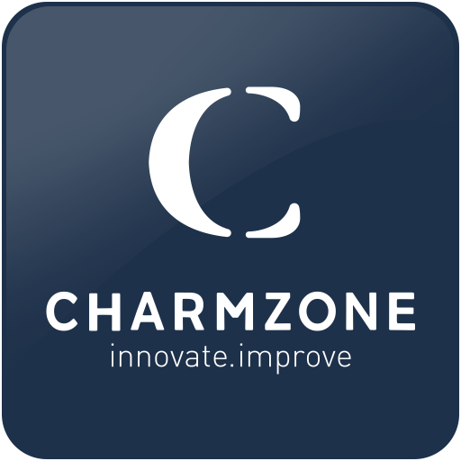

참존 Charmzone
방문판매 채널로 성장한 화장품 제조사
최종 업데이트

참존은 어떤 브랜드인가
참존은 1979년 설립되어 화장품 제조·판매업을 시작했다. 백화점·마트 중심 유통이 아닌 방문판매(카운셀러) 조직을 주력 채널로 삼아 소비자와의 직접 접점을 강조하는 전략을 택했다.
이 채널 전략은 이후 참존의 브랜드 정체성으로 자리잡았다.
참존의 브랜드 아이덴티티는 무엇인가
대형 유통망 없이도 인적 판매 조직을 핵심 자산으로 삼아 장기간 시장 지위를 유지한 사례로, 유통 채널 선택 자체가 브랜드 전략이 된 구조를 보여준다. 방문판매 조직의 확대와 관리가 매출 성장의 핵심 축이다.
참존 연혁 — 주요 사건은 언제였나
참존 로고는 어떻게 변해왔나
자주 묻는 질문
참존는 언제 설립되었나요?
참존는 1984년 설립되었습니다.
참존는 어떤 산업의 브랜드인가요?
참존는 뷰티·퍼스널케어 분야의 브랜드입니다.
참존의 브랜드 아이덴티티는 무엇인가요?
대형 유통망 없이도 인적 판매 조직을 핵심 자산으로 삼아 장기간 시장 지위를 유지한 사례로, 유통 채널 선택 자체가 브랜드 전략이 된 구조를 보여준다.
참존의 공식 웹사이트는 어디인가요?
참존의 공식 웹사이트는 https://www.charmzone.co.kr 입니다.
출처와 검증
참존 관련 참고: 공식 웹사이트. 브랜드명은 한글과 원어를 함께 표기하되 데이터에 없는 표기는 만들지 않습니다. 기원 국가·설립연도는 검수된 정의문에서 확인된 값을 우선하고, 없을 때만 공식 웹사이트 URL이 일치하는 위키데이터 개체의 값을 씁니다. 탄생일의 월·일은 위키데이터, 위키백과 정보상자, 본문 가운데 같은 연월로 확인되는 값만 싣고, 출처끼리 다르면 싣지 않습니다. 웹 첫 보관은 인터넷 아카이브가 공식 사이트 첫 화면을 처음 보관한 날로, 사이트 개설일과 다를 수 있습니다.